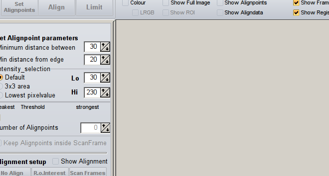
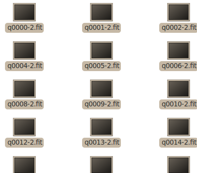
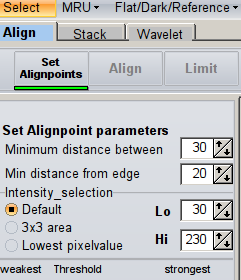
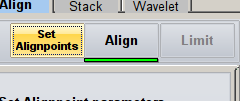
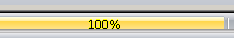
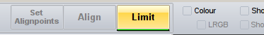
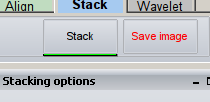
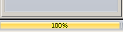

from sikuli.Sikuli import * import os setAutoWaitTimeout(600) #Define Watchdog variables CMD = "top -b -n 10 | gawk '/RegiS/ {print $9}'" test = True cpuMax = 50 # # RED # os.popen("wine /home/miphilli/.wine/drive_c/Program\ Files/RegiStax\ 6/RegiStax6.exe") os.popen("nautilus /home/miphilli/Documents/4-Temp/irisscratch\ 2000-01-01") sleep(20) switchApp("irisscratch") sleep(2) type("Rtop2000\n") sleep(10) wait(Pattern().similar(0.82)) switchApp("Rtop2000") sleep(1) type("a",KEY_CTRL) wait() switchApp("Rtop2000") dragDrop(, ) sleep(10) click(Pattern().similar(0.00).targetOffset(-72,-76)) sleep(15) click() sleep(5) switchApp("Rtop2000") sleep(3) type(Key.BACKSPACE) sleep(5) type("Gtop2000\n") sleep(45) type("a",KEY_CTRL) switchApp("Thunder") while True: RegistaxCPU = os.popen(CMD).readlines() cpu = float(RegistaxCPU[0]) if test: print cpu if cpu < cpuMax : break wait(5) print(RegistaxCPU) switchApp("RegiStax") wait(Pattern().similar(0.78)) click(Pattern().similar(0.78)) click() wait() click() switchApp("Thunder") while True: RegistaxCPU = os.popen(CMD).readlines() cpu = float(RegistaxCPU[0]) if test: print cpu if cpu < cpuMax : break wait(5) print(RegistaxCPU) switchApp("RegiStax") wait(Pattern().similar(0.78)) click(Pattern().similar(0.78)) click(Pattern().similar(0.72).targetOffset(36,-12)) sleep(1) type("n",KEY_ALT) sleep(2) paste('..\\r.tif') sleep(2) type(Key.ENTER) sleep(1) type(" ",KEY_ALT) sleep(1) type("c") sleep(1) # # GREEN # os.popen("wine /home/miphilli/.wine/drive_c/Program\ Files/RegiStax\ 6/RegiStax6.exe") wait() switchApp("Gtop2000") dragDrop(, ) sleep(10) click(Pattern().similar(0.00).targetOffset(-72,-76)) sleep(15) click() sleep(5) switchApp("Gtop2000") sleep(3) type(Key.BACKSPACE) sleep(5) type("Btop2000\n") sleep(45) type("a",KEY_CTRL) switchApp("Thunder") while True: RegistaxCPU = os.popen(CMD).readlines() cpu = float(RegistaxCPU[0]) if test: print cpu if cpu < cpuMax : break wait(5) print(RegistaxCPU) switchApp("RegiStax") wait() click() click() wait() click() switchApp("Thunder") while True: RegistaxCPU = os.popen(CMD).readlines() cpu = float(RegistaxCPU[0]) if test: print cpu if cpu < cpuMax : break wait(5) print(RegistaxCPU) switchApp("RegiStax") wait(Pattern().similar(0.74)) click(Pattern().similar(0.75)) click(Pattern().similar(0.72).targetOffset(36,-12)) sleep(1) type("n",KEY_ALT) sleep(2) paste('..\\g.tif') sleep(2) type(Key.ENTER) sleep(1) type(" ",KEY_ALT) sleep(1) type("c") sleep(1) # # BLUE # os.popen("wine /home/miphilli/.wine/drive_c/Program\ Files/RegiStax\ 6/RegiStax6.exe") wait() switchApp("Btop2000") dragDrop(, ) sleep(10) click(Pattern().similar(0.00).targetOffset(-72,-76)) sleep(15) click() sleep(5) switchApp("Btop2000") sleep(3) type(Key.BACKSPACE) switchApp("Thunder") while True: RegistaxCPU = os.popen(CMD).readlines() cpu = float(RegistaxCPU[0]) if test: print cpu if cpu < cpuMax : break wait(5) print(RegistaxCPU) switchApp("RegiStax") wait(Pattern().similar(0.78)) click(Pattern().similar(0.78)) click() wait() click() switchApp("Thunder") while True: RegistaxCPU = os.popen(CMD).readlines() cpu = float(RegistaxCPU[0]) if test: print cpu if cpu < cpuMax : break wait(5) print(RegistaxCPU) switchApp("RegiStax") wait(Pattern().similar(0.74)) click(Pattern().similar(0.75)) click(Pattern().similar(0.72).targetOffset(36,-12)) sleep(1) type("n",KEY_ALT) sleep(2) paste('..\\b.tif') sleep(2) type(Key.ENTER) sleep(1) type(" ",KEY_ALT) sleep(1) type("n") sleep(1) switchApp("irisscratch") sleep(2) type(" ",KEY_ALT) sleep(1) type("c") #sleep(2) #switchApp('FOLDERSWAPPER') #sleep(2) #type(" ")